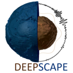

Franck Latallerie
I am a seismologist interested in the internal structure of the Earth, its dynamics, and how it shapes the surface and produces natural phenomenon such as volcanism and earthquakes. I develop and apply methods to measure relevant data from seismograms, to describe the seismic wavefield, and to derive images of the physical properties of the deep Earth. Imaging the internal structure of the Earth is difficult due to noise and the uneven spatial distribution of seismological stations. I have contributed to the development of the SOLA inverse method which provides a mean to control and produce the resolution and uncertainty of tomographic images. I have applied this inversion scheme with surface waves following a classical two-step scheme with ray-theory which allows to produce 2D images at discrete depths. More recently, I adapted the method to work in a fully 3D framework using finite-frequency.
I also teach Earth Sciences undergraduate students maths, physics and programming tutorials. Additionally I like to volunteer for outreach events where I give talks on seismology and the deep Earth, or where I play with real-time recording of the ground vibrations or sliky springs.
Positions
I am currently postdoc at University of Oxford. I am in the Deepscape group where I work with Paula Koelemeijer and Andrew Walker. I also work with Andy Nowacky at University of Leeds. I am also Stipendiary Lecturer at St Anne College in Oxford. Before I was doing my PhD at University of Strasbourg with Alessia Maggi, Christophe Zaroli and Sophie Lambotte.
Note about this website header image
This is a map of the topography and bathymetry (data from the NOAA).